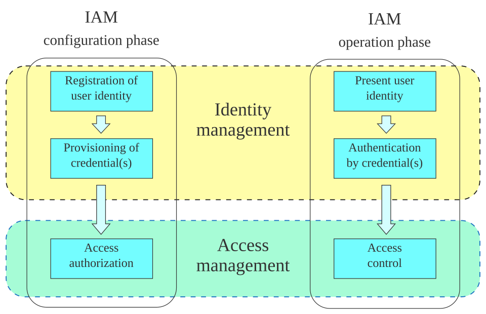

Executive Summary
2026년 5월, SAP는 사파이어 행사에서 '자율 기업(Autonomous Enterprise)'을 선언했다. 200개가 넘는 전문 에이전트가 재무·구매·HR 같은 업무를 처음부터 끝까지 실행하고, 수 주 걸리던 재무결산이 수 일로 줄어든다는 그림이다. 이 글은 그 선언의 화려함이 아니라, 그 밑에 비어 있는 한 칸을 본다. 회사를 돌리는 에이전트들에게 정작 사번이 없다는 사실이다.
사람이 입사하면 사번이 발급되고 권한이 부여되며 모든 행동이 로그로 남는다. 그런데 데이터를 옮기고 결재를 일으키는 에이전트에겐 그 셋이 없는 경우가 대부분이다. 클라우드 보안 연합(CSA)과 Oasis Security의 2026년 1월 조사에서 응답 조직의 78%는 AI 에이전트의 신원을 만들고 없애는 공식 정책조차 갖고 있지 않았다. 감사팀이 "이 결재는 누가 일으켰나"라고 물으면, 답할 장부가 없는 상태다.
자율 기업의 진짜 인프라는 더 똑똑한 에이전트가 아니다. 누가 어떤 데이터에 접근해 무엇을 했는지를 추적하고 검증하는 데이터 신원·계보 체계다. 자율화의 속도는 데이터 거버넌스의 성숙도를 넘지 못한다. 그래서 이 글이 끝에 돌려주는 질문은 하나다. 당신 회사의 에이전트는 '직원'인가, '유령'인가.
주요 수치
지금의 격차를 가장 압축적으로 보여 주는 건 네 개의 숫자다. 한쪽에서는 자율 기업이 수백 개 에이전트로 빠르게 가동되고, 머지않아 한 대기업이 천 단위의 에이전트를 굴린다. 다른 한쪽에서는 그 에이전트들의 신원을 관리하는 정책이 대부분의 조직에서 비어 있고, 에이전트 수가 사람 수를 수십 배 앞지른다. 속도와 거버넌스가 이렇게 멀어진 적이 없다.
출처: SAP News · Strata.io (CSA·Oasis 조사)
200+
SAP 자율 기업 에이전트
재무·구매·HR·CX 전 영역, 50+ Joule 어시스턴트와 함께 가동
78%
신원 정책 부재 조직
에이전트 신원 생성·삭제 공식 정책 없음 (CSA·Oasis, 2026.1)
82 : 1
에이전트 대 인간 비율
AI 에이전트가 인간 사용자를 82배 앞지름 (Rubrik Zero Labs)
1,600
2026년 말 평균 에이전트
대기업 한 곳이 운영할 에이전트 수 전망 (IBM)
에이전트 200개가 회사를 돌리기 시작했다
2026년 5월 사파이어 행사에서 SAP가 내놓은 그림은 분명했다. 200개가 넘는 전문 에이전트와 50개 이상의 Joule 어시스턴트가 재무, 공급망, 조달, HR, 고객 경험 전 영역에 걸쳐 일한다. 사람이 버튼을 누를 때마다 한 단계씩 돕는 보조 도구가 아니라, 업무를 처음부터 끝까지 스스로 끌고 가는 실행 주체로 설계됐다.
효과는 시간 단위로 나타난다. 자율 결산 어시스턴트는 수 주 걸리던 재무결산을 수 일로 압축한다. 자산 관리 쪽에서는 과거 장애 데이터를 분석해 근본 원인을 짚고 정비 지시를 자동으로 만들어 낸다. 독일 전력회사 RWE의 해상 풍력 설비에 적용된 사례가 그렇다. ERP 마이그레이션 공수는 35% 넘게 줄었다. 이 정도면 에이전트는 더 이상 시범 프로젝트가 아니라 회사를 돌리는 일손이다.
흥미로운 건 SAP 자신이 거버넌스를 가장 크게 강조했다는 점이다. SAP는 지식 그래프와 700만 개가 넘는 데이터 필드를 묶는 컨텍스트 레이어 위에, 올해 3분기 정식 출시 예정인 SAP AI 에이전트 허브라는 거버넌스 레이어를 얹었다. NVIDIA와 함께 만든 격리 실행 환경은 에이전트가 시스템에 과도하게 접근하지 못하도록 막는다. CEO 크리스티안 클라인의 말이 그 이유를 압축한다. "미션 크리티컬 프로세스에서 '거의 맞는' 것으로는 충분하지 않다. AI 에이전트를 비즈니스 프로세스, 데이터, 거버넌스에 고정시켜야 한다."
플랫폼을 파는 회사가 자기 입으로 거버넌스를 강조한다는 건, 그곳이 가장 약한 고리라는 신호이기도 하다. 에이전트를 데이터와 거버넌스에 '고정'시켜야 한다는 말은, 지금 대부분의 에이전트가 그렇게 고정돼 있지 않다는 뜻이다.
78%는 에이전트를 유령으로 둔다
클라우드 보안 연합(CSA)과 Oasis Security가 2026년 1월에 내놓은 조사는 그 약한 고리를 숫자로 보여 준다. 응답 조직의 78%는 AI 에이전트의 신원을 만들고 없애는 공식 정책이 없었다. 92%는 기존의 신원·접근 관리(IAM) 체계가 AI 같은 비인간 신원의 위험을 제대로 다룰 수 있다고 확신하지 못했다. 에이전트는 이미 들어와 일하고 있는데, 그들을 어떻게 등록하고 어떻게 내보낼지를 정해 둔 회사가 다섯 중 하나뿐이라는 얘기다.
규모를 생각하면 이 공백은 가볍지 않다. 보안업체 Rubrik Zero Labs의 집계에서 AI 에이전트는 이미 인간 사용자를 82대 1로 앞질렀다. IBM은 2026년 말이면 대기업 한 곳이 평균 1,600개의 에이전트를 운영하리라 전망한다. 사람이라면 누구도 사번 없이 회사 ERP를 만지게 두지 않는다. 그런데 사번 없는 그 존재가 곧 1,600개가 된다.
인증 방식을 들여다보면 문제의 결이 더 선명하다. 에이전트의 44%는 정적 API 키로, 43%는 사용자명과 비밀번호로, 35%는 공유 서비스 계정으로 인증한다. 모두 사람을 전제로 만든 옛 방식이다. 공유 계정 뒤에 열 개의 에이전트가 숨어 있으면, 그중 무엇이 무엇을 했는지 구분할 길이 없다. 신원이 없다는 건 단순히 이름표가 없다는 뜻이 아니라, 행동을 한 주체에게 되돌릴 수 없다는 뜻이다.

신원이 없으면, 누가 했는지 물을 수 없다
신원이 없으면 가장 먼저 무너지는 건 책임 추적이다. 감사팀이 "이 결재는 누가 일으켰나"라고 물었을 때, 공유 계정으로 움직인 에이전트의 행동은 특정 주체로 좁혀지지 않는다. CSA·Oasis 조사에서 모든 환경에 걸쳐 에이전트의 행동을 그 에이전트를 책임지는 사람(보증인)까지 추적할 수 있다고 답한 조직은 28%에 그쳤다. 나머지는 무슨 일이 일어났는지는 알아도, 그 일을 누가 시작했는지로 거슬러 올라가지 못한다.
권한 문제는 더 직접적이다. 보안업체 Entro Security의 분석에서 비인간 신원의 97%가 실제 업무에 필요한 범위를 넘는 과잉 권한을 쥐고 있었다. 사람이라면 부서를 옮길 때 권한을 회수당하지만, 에이전트의 권한은 한번 넓게 열어 두면 그대로 방치되기 쉽다. 과잉 권한을 가진 에이전트가 오작동하면, 그 파급 범위는 처음 의도한 업무를 한참 넘어선다.
더 곤란한 건 멈추는 방법조차 모르는 경우다. AI 기업 Writer의 데이터에서 조직의 35%는 이상 행동을 보이는 에이전트를 강제로 종료하는 방법을 갖고 있지 않았다. 사람이라면 출입증을 회수하고 계정을 잠그면 되지만, 신원 없이 풀려난 에이전트는 어디서 어떻게 멈춰야 하는지가 분명치 않다.

이제 규제가 이 공백에 책임을 묻기 시작한다. EU AI법은 2026년 8월부터 고위험 AI 시스템에 데이터 출처 문서화를 요구하는 완전 집행 단계에 들어가고, 미국 NIST의 AI 위험관리 프레임워크 1.1은 감사·추적성·로깅을 명시한다. 미국 금융산업규제기구(FINRA)는 2026년 감독 보고서에 생성형 AI 섹션을 처음 넣고, 자동화된 금융 의사결정의 설명가능성과 감사가능성을 요구했다. "추적할 수 없다"는 더 이상 사정이 아니라 위반의 사유가 된다.
진짜 인프라는 데이터 신원·계보다
해법의 출발점은 의외로 단순하다. 사람을 회사에 들이는 방식을 그대로 에이전트에게 적용하는 것이다. 입사하면 사번이 생기고, 직무에 맞는 권한이 부여되고, 모든 접근과 처리가 로그로 남는다. 에이전트에게도 같은 세 가지가 필요하다. 누구인지(에이전트 ID), 어떤 데이터에 접근할 수 있는지(접근 범위), 그래서 실제로 무엇을 했는지(행동 계보)다.
세 가지 중 가장 자주 빠지는 칸이 마지막이다. 신원과 권한을 IT 보안의 문제로 보면 ID 발급과 접근 제어에서 멈춘다. 그러나 자율 기업에서 정작 중요한 건 그 에이전트가 어떤 데이터를 끌어와 어떤 변환을 거쳐 어떤 결정을 내렸는가, 즉 데이터 계보다. 결재 하나, 정비 지시 하나의 근거를 데이터까지 거슬러 추적할 수 없다면, 신원이 있어도 검증은 불가능하다. 데이터의 출처와 변환 과정을 끝까지 따라가는 계보가 왜 AI 파이프라인의 토대인지는 앞선 글에서 다룬 바 있다.

앞선 회사들이 향하는 방향도 여기다. Snowflake의 에이전트 컨텍스트 레이어는 답변의 근거를 추적할 수 있게 한다. 어떤 소스를 썼고 어떤 변환을 거쳤는지, 데이터 계보까지 함께 남긴다. Salesforce는 에이전트 아키텍처의 첫 원칙으로 "데이터와 의미가 먼저(Data and semantic first)"를 내걸고 품질·계보·거버넌스·접근 도구를 필수로 본다. ServiceNow의 AI 컨트롤 타워는 에이전트의 행동을 실시간으로 모니터링하고 생애주기를 관리한다. 더 똑똑한 모델 경쟁이 아니라, 추적·검증 인프라 경쟁이다.
이 움직임은 개별 벤더의 제품을 넘어 표준화 단계로도 번지고 있다. 인터넷 표준을 만드는 IETF는 2026년 3월 에이전트 신원 관리 체계(AIMS) 초안을 내놨다. 워크로드의 신원을 정의하는 WIMSE, 서비스 사이에서 신원을 증명하는 SPIFFE/SPIRE, 권한을 위임하는 OAuth 2.0을 하나로 묶어, 에이전트에게 사람의 사번에 해당하는 검증 가능한 신원을 부여하려는 시도다. 각 회사가 자기 플랫폼에 거버넌스 레이어를 얹는 단계를 지나, 에이전트의 신원을 업계 공통의 규격으로 못 박으려는 작업이 이미 시작된 셈이다.
여기에 페블러스가 보는 한 줄이 있다. 자율화의 속도는 데이터 거버넌스의 성숙도를 넘지 못한다. 에이전트를 100개에서 1,600개로 늘리는 일은 예산과 시간이 풀어 주지만, 그 1,600개가 무엇을 했는지 설명할 수 있느냐는 데이터의 신원과 계보를 얼마나 갖춰 두었느냐에 달렸다. 검증할 수 없는 자율은 자율이 아니라 방치다.
직원인가 유령인가, 자가 진단
그래서 결국 각자의 회사로 질문이 돌아온다. 우리 회사의 에이전트는 사번을 가진 직원에 가까운가, 아니면 이름 없이 시스템을 떠도는 유령에 가까운가. 거창한 진단 도구가 필요하지는 않다. 네 가지 질문에 답해 보면 지금 위치가 드러난다. 괄호 안 숫자는 앞서 본 조사에서 "그렇다"고 답한 조직의 비율이다.
1. 인벤토리 — 지금 운영 중인 에이전트의 실시간 목록을 갖고 있는가? (21%)
2. 책임 추적 — 에이전트의 행동을 그를 책임지는 사람까지 거슬러 추적할 수 있는가? (28%)
3. 강제 종료 — 이상 행동을 보이는 에이전트를 즉시 멈출 수 있는가? (종료 수단 없음 35%)
4. 데이터 계보 — 데이터 거버넌스 로드맵에 에이전트 신원과 계보 항목이 들어 있는가?
네 질문에 모두 "그렇다"고 답할 수 있는 조직은 드물다. 그래서 이 글은 답을 주기보다 위치를 가늠하게 하는 데 목적이 있다. 자율 기업은 더 많은 에이전트를 들이는 일이 아니라, 들인 에이전트마다 사번을 발급하고 그들이 만진 데이터의 장부를 펼쳐 둘 수 있게 만드는 일이다. SAP가 강조한 거버넌스 레이어, Snowflake가 남기는 계보, Salesforce가 앞세운 데이터 우선 원칙은 모두 같은 곳을 가리킨다. 자율의 화려함은 모델이 만들지만, 자율의 신뢰는 데이터 거버넌스가 만든다.
참고문헌
업계 발표·소스
- 1.SAP SE. (2026, May 12). SAP Sapphire 2026: SAP Unveils Autonomous Enterprise. news.sap.com
- 2.SAP SE. (2026, May). SAP Sapphire 2026 Keynote: Business AI Platform to Power the Autonomous Enterprise. news.sap.com
- 3.NVIDIA. (2026). ServiceNow and NVIDIA Advance Autonomous AI Agents for Enterprises. blogs.nvidia.com
- 4.Prosus. (2026). State of AI Agents 2026: Autonomy Is Here. prosus.com
리서치·조사 보고서
- 5.Cloud Security Alliance & Oasis Security. (2026, January). AI Agent IAM Framework: Enterprise Gap. labs.cloudsecurityalliance.org
- 6.Strata Identity. (2026). The AI Agent Identity Crisis: New Research Reveals a Governance Gap. strata.io
- 7.Rubrik Zero Labs. (2026). The State of Data Security 2026. (AI 에이전트:인간 사용자 = 82:1 집계)
- 8.Beam AI. (2026). IBM Says Enterprises Will Run 1,600 AI Agents by Year-End: 70% Can't Govern the Ones They Have. beam.ai
- 9.Agentic AI Institute. (2026). Agentic AI Enterprise Adoption 2026: The Governance Gap. agenticaiinstitute.org
- 10.Entro Security. (2025). State of Non-Human Identity Security 2025. (비인간 신원 97% 과잉 권한 분석)
표준·규제
- 11.European Parliament & Council of the EU. (2024). Regulation (EU) 2024/1689 — Artificial Intelligence Act. eur-lex.europa.eu
- 12.National Institute of Standards and Technology. (2026, March). Artificial Intelligence Risk Management Framework (AI RMF) 1.1. airc.nist.gov
- 13.Financial Industry Regulatory Authority. (2026). FINRA 2026 Annual Regulatory Oversight Report. finra.org
- 14.Internet Engineering Task Force. (2026, March 2). Agent Identity Management System (AIMS) — Draft Framework. (WIMSE·SPIFFE/SPIRE·OAuth 2.0 통합 에이전트 신원 표준화 초안)